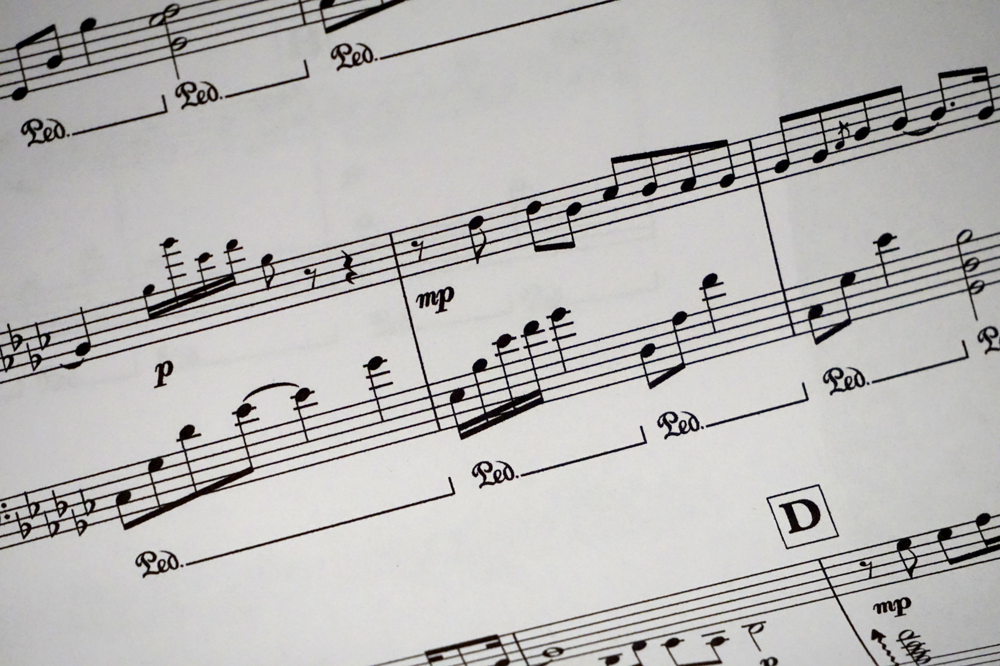

I like badminton from my childhood.It is a sport which makes me happy whenever there is a hectic day it gives me a pleasure
I started clicking some good pictures, from class 10th, and knows little deep of photography. I usually click pictures everywhere, like whereever I feel like the place is good to click, I click it. I love to click picture of nature and scenic view. I may not be a professional photographer but I am fond of clicking photos
I am fond of watching sci-fi, thriller, adventurous,horror and rom-com movies
 I love to listen english as well as Hindi songs. I just listen to music to chill out and feel motivated to do my day to day work,it makes me feel happy and cheerful always. I like listening to soft songs. Some songs I would recomend you to listen are: somewhere only we know, from the start,cold/mess, something just like this,hymn for the weekend